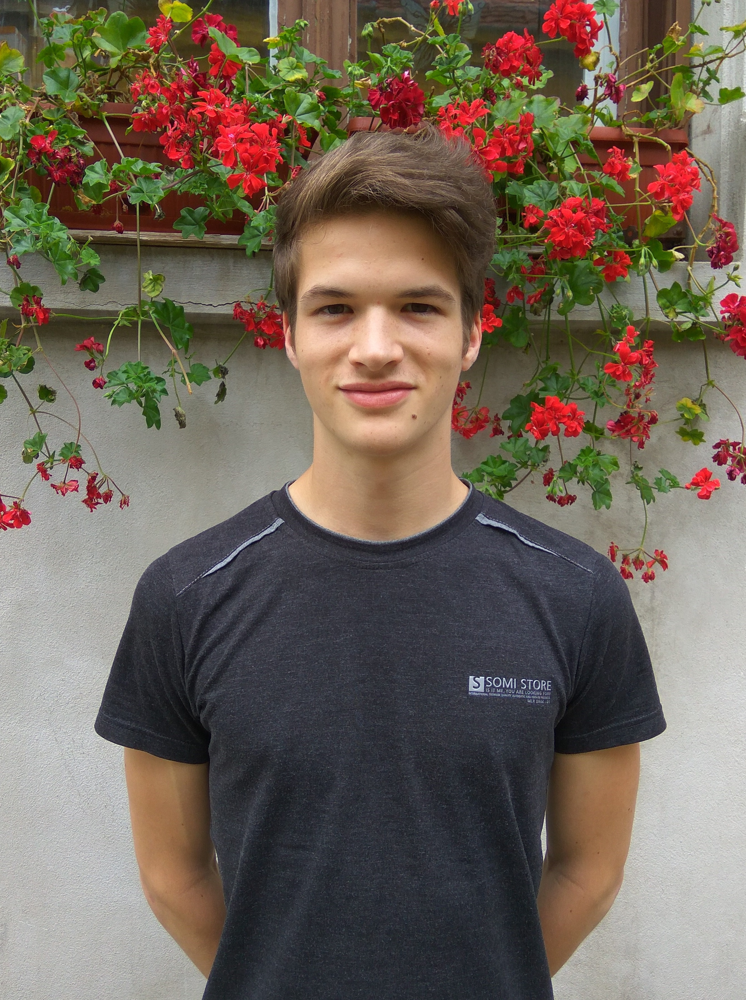

| Rólam | |
|  |
Gimnáziumba emelt szintű matematikát tanultam, majd a Műegyetem Gépészmérnöki karán folytattam a tanulmányaimat. A műszaki pálya mindig is közel állt hozzám, a családomban többen is ezen a területen helyezkedtek el, gyakorlatilag ilyen környezetben nevelkedtem fel. |